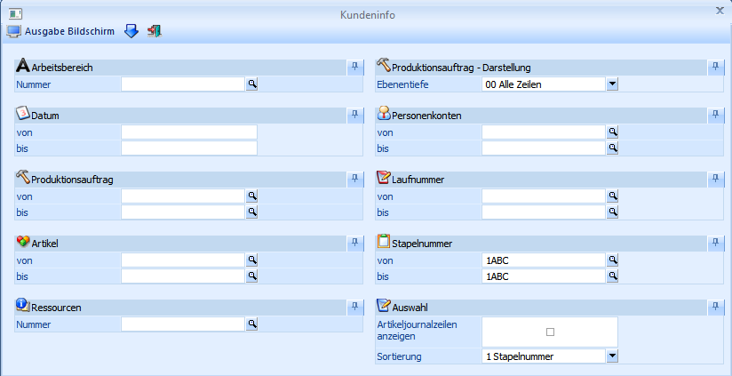
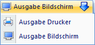
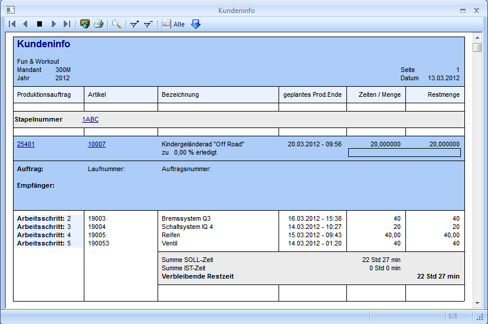

Über den Menüpunkt
1 WinLine PPS
1 Auswertungen
1 Kundeninfo
kann die Auswertung "Kundeninfo" ausgegeben werden. Darin ist ersichtlich, zu wie viel Prozent die Produktionsaufträge bereits erledigt sind und wie das geplante Fertigstellungsdatum lautet.

Selektionsbereich
Ø Arbeitsbereich
Auswahl des Arbeitsbereiches. Mit Hilfe des Arbeitsbereiches können gewisse Einschränkungen wie z.B. der Produktionsartikel bereits vorbelegt werden. Die Anlage des Arbeitsbereichs erfolgt in den Stammdaten.
Ø Datum von - bis
Einschränkung des Datumsbereiches, für den die Auswertung erfolgen soll.
Ø Produktionsauftrag
Einschränkung der Produktionsaufträge, für welche die Auswertung durchgeführt werden soll.
Hinweis
Wird ein Produktionsauftrag eingegeben, dann wird rechts neben dem Eingabefeld der Artikel angezeigt, der produziert werden soll. Durch einen Klick auf diesen Artikel wird automatisch eine Aktion (Start eines Programms bzw. einer Auswertung) ausgeführt.
Über die rechte Maustaste kann eingestellt werden, welche Aktion dabei ausgeführt werden soll, wobei die letzte Aktion gemerkt wird. D.h. wenn das nächste Mal mit der linken Maustaste auf den Artikel geklickt wird, dann wird die letzte Aktion wieder ausgeführt. Dabei stehen folgende Optionen zur Verfügung:
ü Produktionsliste
Es wird die
"Produktionsliste" geöffnet und die Auswertung direkt gestartet.
ü Komprimierte Auswertung
Es wird
die Auswertung "Kalenderauswertungen" - "Wochenübersicht" - "Prod. Aufträge /
Balken" gestartet.
ü Detailauswertung
Es wird die
Auswertung "Kalenderauswertungen" - "Prod. Aufträge" - "Detailauswertung"
gestartet.
ü Diagramm
Es wird die Auswertung
"Kalenderauswertungen" - "Prod. Aufträge" - "Diagramm" gestartet.
ü Projektauswertung
Es wird die
"Übersichts-/Kollisionsliste" geöffnet und die Übersichtsauswertung direkt
gestartet.
ü Belegmanagement
Es wird das
"Belegmanagement" in von WinLine FAKT aufgerufen. Dies ist allerdings nur dann
möglich, wenn der Produktionsauftrag auch aus der Auftragsbearbeitung übernommen
wurde.
ü Arbeitsschrittstatus
Es wird
der "Arbeitsschrittstatus" geöffnet.
ü Auftragsbezogene
Belege
Auswertung "Auftragsverfolgung" eingegrenzt auf den aktuellen
Produktionsauftrag und mit Option "alle Verweise anzeigen" wird mit dieser
Option geöffnet.
ü Produktionsauftrag bearbeiten
Mit dieser Option wird der Produktionsauftrag in der Produktionskorrektur
(immer mit dem obersten Arbeitsschritt bzw. Arbeitsschritt 1) geöffnet.
Ø Produktionsartikel
Einschränkung der Produktionsartikel, für welche die Auswertung erfolgen soll. Wird im Feld Artikel von - bis z.B. nur eine Artikelnummer eingegeben und dieser Artikel hat auch noch Ausprägungen, so werden alle Ausprägungen automatisch mit angedruckt. Nur wenn während des Anklicken des "Ausgabe-Buttons" die STRG-Taste gedrückt wird, wird nur der Hauptartikel alleine ausgewertet.
Hinweis
Durch einen Klick auf die Artikelbezeichnung (rechts neben der Produktionsartikelnummer) wird automatisch eine Aktion (Start eines Programms bzw. einer Auswertung) ausgeführt.
Welche Aktion dabei ausgelöst wird, kann über die rechte Maustaste festgelegt werden (die letzte Einstellung wird gespeichert), wobei folgende Optionen zur Verfügung stehen:
ü Aufruf Info
Es wird der Artikel
in der "Artikelinfo" im Programm WinLine INFO geöffnet.
ü Artikelstamm
Der Artikel wird
in WinLine FAKT im "Artikelstamm" geöffnet.
ü Statistik
Es wird die
"Artikelstatistik" in WinLine FAKT geöffnet.
ü Artikelbedarfsvorschau
Es wird
die "Bedarfsvorschau" des Artikels in WinLine FAKT geöffnet.
Ø Ressourcen
Einschränkung auf eine Ressource, für welche die Auswertung erfolgen soll. Es werden die Soll- und Ist-Zeiten für die eingeschränkte Ressource angezeigt.
Ø Produktionsauftrag - Darstellung
Hier kann die Ebenentiefe gewählt werden, die angezeigt werden soll.
Ø Personenkonten von - bis
Einschränkung der Personenkonten, für die die Auswertung erfolgen soll. Das ist allerdings nur dann sinnvoll, wenn die Produktionsaufträge aus der WinLine FAKT übergeben wurden, bzw. wenn beim Produktionsauftrag auch ein Personenkonto hinterlegt wurde.
Hinweis
Durch einen Klick auf die Kundenbezeichnung (rechts neben der Kundennummer) wird automatisch eine Aktion (Start eines Programms bzw. einer Auswertung) ausgeführt.
Welche Aktion dabei ausgelöst wird, kann über die rechte Maustaste festgelegt werden (die letzte Einstellung wird gespeichert), wobei folgende Optionen zur Verfügung stehen:
ü Aufruf Info
Es wird das
Personenkonto in der "Konteninfo" im Programm WinLine INFO geöffnet.
ü Personenkontenstamm
Das
Personenkonto wird in WinLine FIBU im "Personenkontenstamm" geöffnet.
ü Statistik
Es wird die
"Kundenstatistik" in WinLine FAKT geöffnet.
ü Kontoblatt
Es wird das
"Kontoblatt" des Personenkontos in WinLine FIBU geöffnet.
ü OP-Blatt
Es wird die "Offene
Posten - Auswertung" des Personenkontos in WinLine FIBU geöffnet.
ü Belegmanagement
Es wird das
"Belegmanagement" in WinLine FAKT geöffnet.
Ø Laufnummer
Einschränkung der Laufnummern die angezeigt werden sollen.
Ø Stapelnummer
Einschränkung der Stapelnummern die angezeigt werden sollen.
Ø Artikeljournalzeilen anzeigen
Bei Aktivierung dieser Option werden die Artikeljournalzeilen zu dem Halbfertig- bzw. Fertigprodukt ausgewiesen (nicht der verbrauchten Komponenten).
Buttons
Ø

Ausgabe Drucker / BildschirmDurch Anwählen der "Ausgabe Bildschirm" oder "Ausgabe Drucker" wird die Auswertung am Bildschirm angezeigt oder auf dem Drucker ausgegeben.
Beispiel

Ø
Ø Sortierung
Hier kann entschieden werden, ob die Liste der Kundeninfo sortiert nach
ü Auftrag
ü Stapelnummer
ausgegeben werden soll.
Ø  Ende
Ende
Der Programmbereich wird verlassen und die Auswertung nicht ausgegeben.